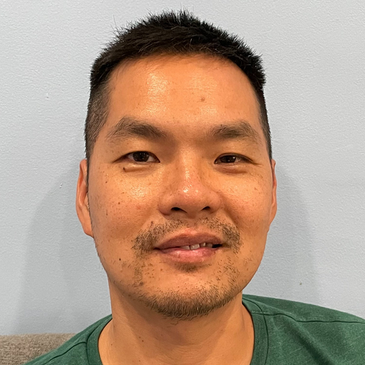
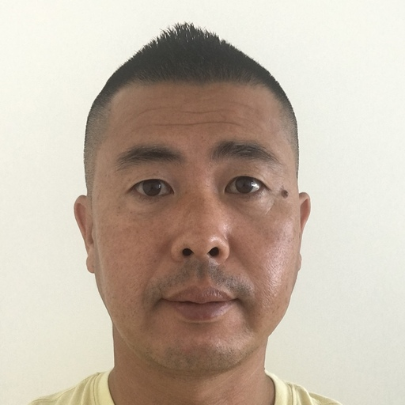
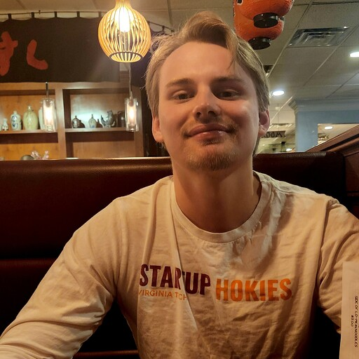

About Us
Adrian Hernandez:
My name is Adrian Hernandez and I am 29 years old. I was enlisted in the Army as a Practical Nursing Specialist and most recently worked as a Non-Commissioned Officer in Charge for a labor and delivery unit. I am able to effectively work in a team setting and I learned a good amount of that from both the military and nursing. I am able to effectively communicate with others and I have good interpersonal skills which I developed as a nurse. I am used to working in a hectic environment and can keep my cool in stressful situations. I have also worked in customer service and I know how to put the consumers wants and needs into perspective in order to provide them with the best experience. Software Development sparked my interest because it’s an essential asset in most if not all industries. The potential for growth in this field is very high and that excites me. I would like to see what I could potentially contribute to the software development field.

Yen Xiong Yuan:
My name is Yen Xiong Yuan. I am US Veteran. Now working as real estate agent in PA. Currently living in Philadelphia with my wife and 3 years old son. I like to play poker when I have some from time.

Robert Davis:
Hello, my name is Robert Davs as a Software Developer student at Code Fellow Bootcamp I’m passionate about exploring ways technology can provide practical solutions to everyday problems. I’m particularly interested in mobile applications related to the field of travel industry. Customer service background in hospitality as a Concierge for a Hotel.

Colter Wilson:
Hello all, my name is Colter Wilson, I am a 22-year-old aspiring software developer currently living in Roanoke Virgina. Since graduating from high school in 2018 I have tried my hand in many different fields including water distribution, electric, and the food industry which I am currently working in. Each of these industries has taught me valuable lessons such as how to fix a water pipe leak all the way to how to manage an angry customer but I knew they weren't my calling. It wasn't until about a year ago that I discovered coding and began self-learning. Since then, I have developed a passion for it and began taking courses at Codefellows to pursue a career in software engineering. I'm excited to see where this journey will take me!